<div class="container">
  <div id="contents" class="col-md-12 main-content"><h1 xmlns="http://www.w3.org/1999/xhtml" id="toc-id-4">Making new things out of old things</h1>
    
    <p xmlns="http://www.w3.org/1999/xhtml" class="x--Body-opener">In the following two weeks, you will
    learn how paper is recycled. You will also learn how to make
    new objects out of old pieces of cardboard. You will make your
    own packaging for a product.</p>

    <figure xmlns="http://www.w3.org/1999/xhtml">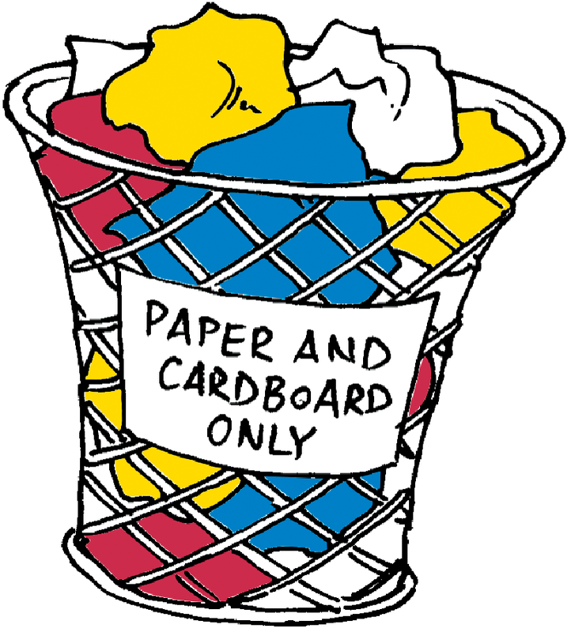<figcaption>Figure 1:  Gathering paper and cardboard waste separate from other waste
</figcaption></figure><figure xmlns="http://www.w3.org/1999/xhtml">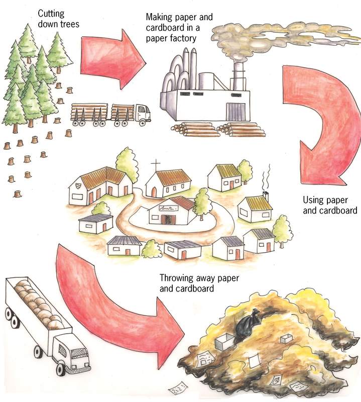<figcaption>Figure 2: Using paper and cardboard without recycling it
</figcaption></figure><p xmlns="http://www.w3.org/1999/xhtml" class="x--Body-opener--1-3-">Paper and cardboard are
    materials that are biodegradable. They do not damage the
    environment when they are thrown away. They can also be burnt
    in order to generate heat or electricity, and no poisonous
    gases will be given off. But to make paper and cardboard, trees
    have to be cut off. If paper and cardboard are recycled, fewer
    trees have to be cut down.</p>

    <div xmlns="http://www.w3.org/1999/xhtml" class="aside">
      <p class="x--Body-box-heading">Did you know?</p>

      <p class="x--Body-box-no-indent">When 54 kg of newspaper is
      recycled, one less tree has to be cut down.</p>

      <p class="x--Body-box-no-indent">Almost 40% of municipal
      solid waste is paper and cardboard.</p>
    </div>

    <figure xmlns="http://www.w3.org/1999/xhtml">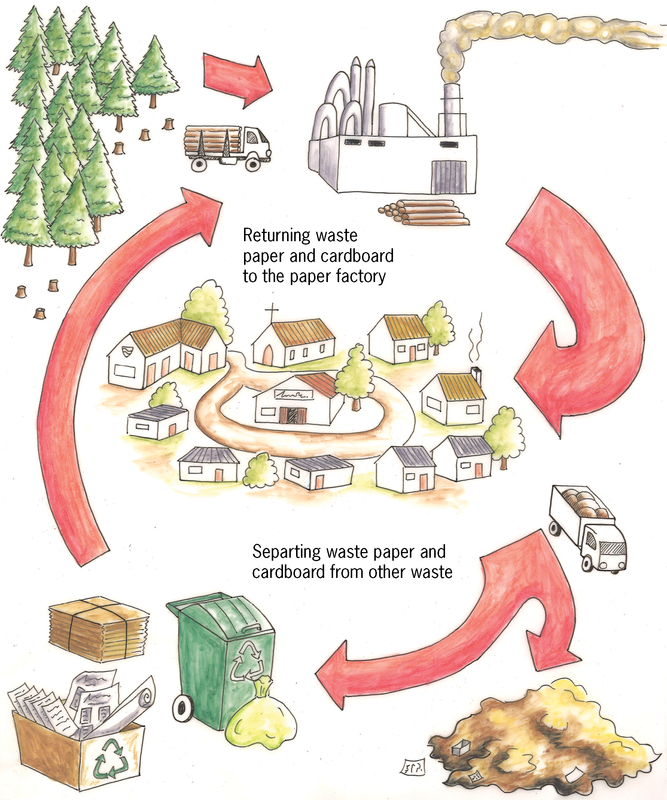<figcaption>Figure: 3:  Using paper and cardboard, and recycling it
</figcaption></figure><div xmlns="http://www.w3.org/1999/xhtml" class="aside">
      <p class="x--Body-box-heading">Did you know?</p>

      <p class="x--Body-box-no-indent">The average person uses
      almost 50 kg of paper and cardboard per year.</p>

      <p class="x--Body-box-no-indent">Poisonous chlorine gas is
      used to <b>bleach</b>
      paper. To bleach means to make white. The chlorine can form
      poisonous gases called dioxins, which can be released into
      the atmosphere.</p>
    </div>

    <h2 xmlns="http://www.w3.org/1999/xhtml" id="toc-id-5">What are paper and cardboard made of?</h2>

    <p xmlns="http://www.w3.org/1999/xhtml" class="x--Body-Text">A paper recycling factory makes new
    paper or cardboard out of waste paper. The way this is done is
    explained below. You can also make recycled paper at home.</p>
<ol xmlns="http://www.w3.org/1999/xhtml"><li>
    <p class="x--Body-investigation-hanging--1-3-"> Waste paper
    is mixed with warm water and chemicals. It is stirred and
    chopped up by a machine to separate the thin little fibres the
    paper is made of. The machine that stirs and chops up the
    mixture of paper and water, works like a food blender.</p>

    <p class="x--Body-investigation-hanging--1-3-">The mixture of
    chopped-up paper and water is called paper <b>pulp</b>.</p>

    <figure>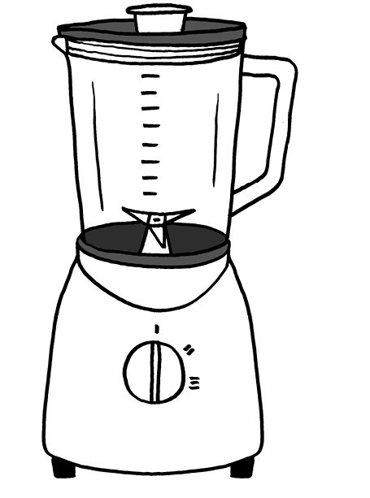<figcaption>Figure 4 </figcaption></figure></li>
<li>
    <p class="x--Body-investigation-hanging--1-3-"> The pulp is
    poured through a <b>sieve</b>. Old <span class="Body-bold char-style-override-3">glue</span> and fibres that
    are very short pass through the sieve. Long, strong fibres
    remain on top. These fibres then go to a stirred tank where
    chemicals are added to remove ink from the pulp.</p>
    
    <figure>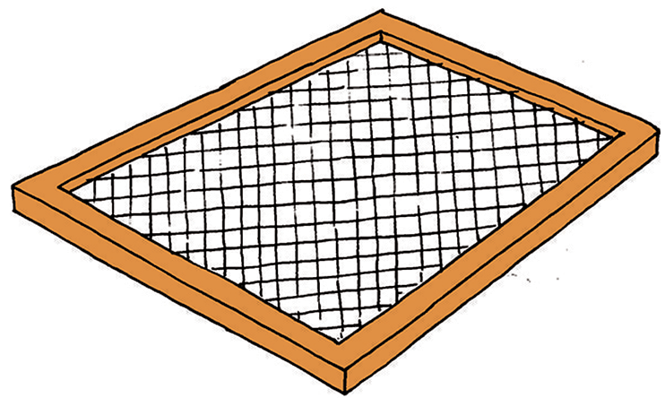<figcaption>Figure 5: A sieve </figcaption></figure></li>
<li>
    <p class="x--Body-investigation-hanging--1-3- para-style-override-17">
    New glue is added to the pulp. Some clay is also added if the
    recycled paper will be used for writing or printing, because
    the clay gives the paper a smoother surface.</p>
</li>
<li>
    <p class="x--Body-investigation-hanging--1-3- para-style-override-18">
    The pulp goes to a paper-making machine, where it is pressed
    between two rollers to give it the required thickness, and to
    squeeze out water.</p>

    <p class="x--Body-investigation-hanging">Instead of waiting a
    long time for the paper to dry, it is dried more quickly by
    heating it and blowing hot air over it. Once the paper is dry,
    it is cut into the necessary size and packaged.</p>
</li>
</ol><p xmlns="http://www.w3.org/1999/xhtml" class="x--Body--above">Paper fibres can be recycled as many
    as seven times. But each time it is recycled, the fibres get
    broken into shorter and shorter fibres. If it is recycled too
    many times, the fibres become too short and weak to use for
    making paper again.</p>

    <h3 xmlns="http://www.w3.org/1999/xhtml" class="x--Head-investigation">Case study: paper recycling</h3>
<ol xmlns="http://www.w3.org/1999/xhtml"><li>
    <p class="x--Body-investigation-hanging"> What is cardboard
    made of?</p>
    <hr/></li>
<li>
    <p class="x--Body-investigation-hanging"> Why can paper not
    be recycled more than seven times?</p>
    <hr/></li>
<li>
    <p class="x--Body-investigation-hanging"> What will happen
    when the holes of the sieve are too big?</p>
    <hr/></li>
<li>
    <p class="x--Body-investigation-hanging"> What will happen
    when the holes of the sieve are too small?</p>
    <hr/></li>
</ol><h3 xmlns="http://www.w3.org/1999/xhtml" class="x--Head-investigation">Homework for the next lesson</h3>

    <p xmlns="http://www.w3.org/1999/xhtml" class="x--Body-text-1-3 para-style-override-20">Find some
    old empty pill boxes and bring them to school for the next
    lesson. If you cannot find a pill box, bring another
    <b>small box that can close after you
    opened it</b>. Try to find at least two such boxes. Some
    spices are packaged in boxes like these, as well as some light
    bulbs.</p>

    <div xmlns="http://www.w3.org/1999/xhtml" class="aside">
      <p class="x--Body-box-heading"><b>Safety warning</b></p>

      <p class="x--Body-box-no-indent">Do not remove pills from
      pill boxes. Pill boxes have labels that say what the pills
      are and how to use them. If those labels are lost, somebody
      may not know what medicine to take and how to take it.</p>

      <p class="x--Body-box-no-indent">Ask your parent or another
      adult for an empty pill box.</p>
    </div>
    
    <figure xmlns="http://www.w3.org/1999/xhtml">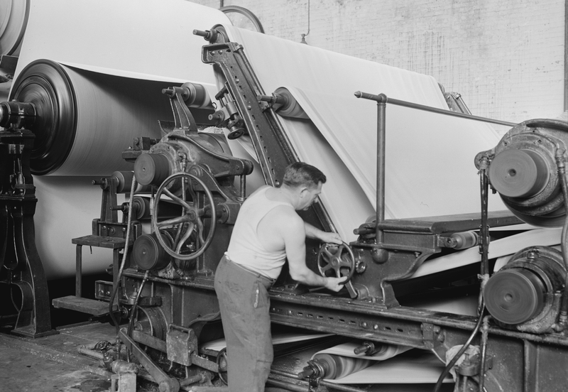<figcaption>Figure 6:  Part of an old paper-making machine
</figcaption></figure><h2 xmlns="http://www.w3.org/1999/xhtml" id="toc-id-6">How are paper and cardboard recycled?</h2>

    <p xmlns="http://www.w3.org/1999/xhtml" class="x--Body-Text">Take out one of the small boxes that
    you brought to school. Look carefully at all sides of the box.
    Then open the box so you can look inside it, but do not tear or
    cut the box to open it. While you are looking at the box, try
    to imagine how this box was made out of flat cardboard.</p>

    <div xmlns="http://www.w3.org/1999/xhtml" class="note">
      <ul><li class="x--Body-text-bullet"><span class="char-style-override-8"/> A
        <b>face</b> is one of the flat
        surfaces of the box that can be seen from the outside.</li>

        <li class="x--Body-text-bullet"><span class="char-style-override-8"/> An
        <b>edge</b> is the line where two
        faces meet.</li>

        <li class="x--Body-text-bullet"><span class="char-style-override-8"/> A
        <b>corner</b> is where three faces
        meet at a single point. At this point, there are also three
        edges that are meeting.</li>

        <li class="x--Body-text-bullet"><span class="char-style-override-8"/> A
        <b>tab</b> is an extra flap
        attached to a face that helps to keep the box closed. It
        cannot be seen from the outside of a closed box.</li>
      </ul></div>

    <figure xmlns="http://www.w3.org/1999/xhtml">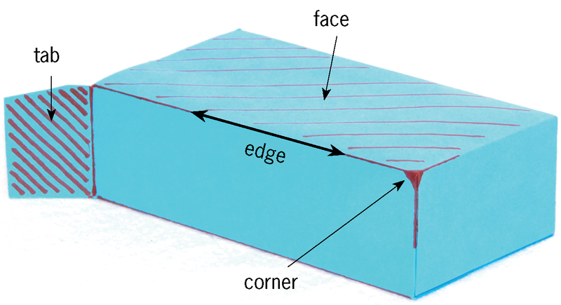<figcaption>Figure 7: The different parts of a box
</figcaption></figure><h3 xmlns="http://www.w3.org/1999/xhtml" class="x--Head-investigation">Think about the different parts of a box</h3>
<ol xmlns="http://www.w3.org/1999/xhtml"><li>
    <p class="x--Body-investigation-hanging"> How many faces does
    the box have?</p>
    <hr/></li>
<li>
    <p class="x--Body-investigation-hanging"> How many edges does
    the box have?</p>
    <hr/></li>
<li>
    <p class="x--Body-investigation-hanging"> How many corners
    does the box have?</p><hr/></li>
<li>
    <p class="x--Body-investigation-hanging"> Look at the two
    drawings of the box below. The drawings were made by looking at
    the box from different angles. A name is written on each face
    of this box. Write the same names on the different faces of
    your own box.</p>

    <figure>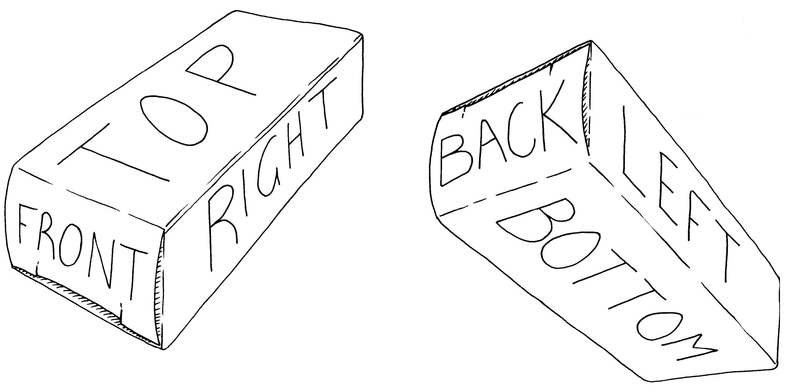<figcaption>Figure 8:  Giving names for the different faces of a box
</figcaption></figure></li>
<li>
    <p class="x--Body-investigation-hanging"> Out of how many
    separate pieces of cardboard was the box made?</p>
    <hr/></li>
</ol><div xmlns="http://www.w3.org/1999/xhtml" class="note">
   
        <p class="Body-bullet">There are three different ways in which an edge can
be made in a cardboard box.</p>
<ul><li class="x--Body-text-bullet"><span class="char-style-override-8"/>
        <b>Unbroken edge:</b> The cardboard
        is simply folded along a line.</li>

        <li class="x--Body-text-bullet"><span class="char-style-override-8"/>
        <b>Edge made using a tab</b>: One
        of the two faces that come together has a tab attached to
        it. This tab folds in underneath the other face to close
        the box.</li>

        <li class="x--Body-text-bullet"><span class="char-style-override-8"/>
        <b>Edge made with a tab glued to
        another face:</b> This is the same as an edge made with
        a tab, but this time the tab is permanently attached to the
        other face by glue.</li>
      </ul></div>

    <h3 xmlns="http://www.w3.org/1999/xhtml" class="x--Head-investigation">The different types of edges of your box</h3>

    <ol xmlns="http://www.w3.org/1999/xhtml"><li>
    <p class="x--Body-investigation-hanging para-style-override-12"> The
    photos below show different edges of a box.Write what kind of
    edge is on each photo. Write the type below the photo.</p>
            <figure>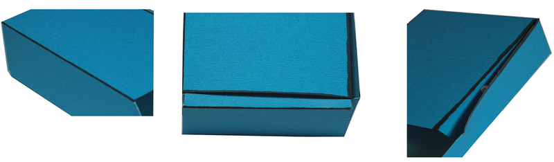<figcaption>Figure 9
</figcaption></figure></li>
<li>
    <p class="x--Body-investigation-hanging"> How many of the
    edges of your box are unbroken edges?</p>
    <hr/></li>
<li>
    <p class="x--Body-investigation-hanging"> How many of the
    edges of your box are made using tabs that are not glued?</p>
    <hr/></li>
<li>
    <p class="x--Body-investigation-hanging"> How many of the
    edges of your box are made using tabs that are glued?</p>
    <hr/></li>
<li>
    <p class="x--Body-investigation-hanging"> How many tabs in
    total were used to make the box?</p>
    <hr/></li>
</ol><h3 xmlns="http://www.w3.org/1999/xhtml" class="x--Head-investigation">Homework</h3>
<ol xmlns="http://www.w3.org/1999/xhtml"><li><ol><li>
    <p class="x--Body-investigation-hanging--1-3-"> Find an
    old cardboard box. It should be made of <b>thin, solid cardboard</b>. Cereal boxes and
    other boxes in which food are packaged are normally made from
    cardboard like this. The box must not be made of <b>corrugated cardboard</b>.</p>
    <figure>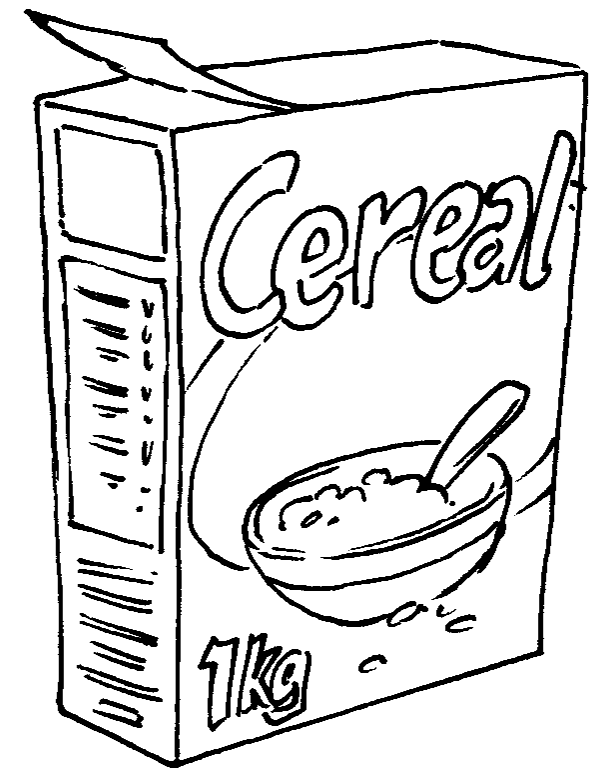<figcaption>Figure 10: Boxes for packing food are made of thin, solid cardboard. </figcaption></figure></li>
<li>
    <p class="x--Body-investigation-hanging--1-3-"> Cut the box
    and fold it flat. The flat sheet of cardboard in front of you
    should be at least as big as an A4 sheet of paper.</p>
</li>
<li>
    <p class="x--Body-investigation-hanging-a-"> Do the same to
    make two more cardboardsheets.</p>
</li>
</ol></li>
<li>
    <p class="x--Body-investigation-hanging--1-3-"> Find at least
    eight old A4 paper sheets. One side of each of these sheets
    should be clean, because you will draw on it.</p>
</li>
<li>
    <p class="x--Body-investigation-hanging--1-3-"> Bring the
    paper and cardboard sheets to all your Technology lessons next
    week. You will reuse this old paper and cardboard to make paper
    and cardboard boxes.</p>
</li>
<li>
    <p class="x--Body-investigation-hanging--1-3- para-style-override-1">
    Bring your pill boxes, or other small boxes, to your next
    lesson again.</p>

    <figure>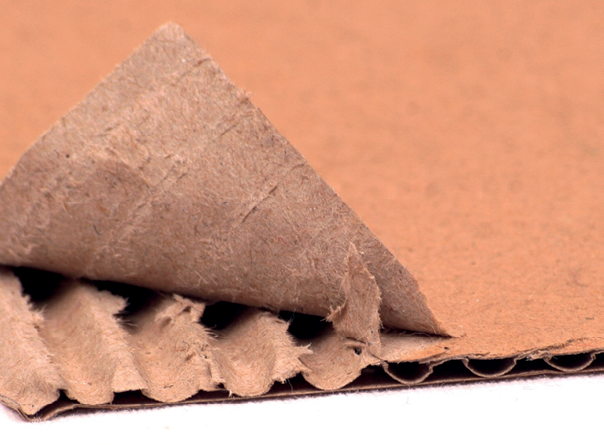<figcaption>Figure 11: Large boxes are
made of corrugated cardboard
</figcaption></figure></li>
</ol><h2 xmlns="http://www.w3.org/1999/xhtml" id="toc-id-7">Draw the development of a box</h2>

    <p xmlns="http://www.w3.org/1999/xhtml" class="x--Body-Text">Cut the box open along the edge where
    it was glued together. Fold it flat. We call this the
    <b>flat plan</b> or <b>development</b> of the box.</p>

    <figure xmlns="http://www.w3.org/1999/xhtml">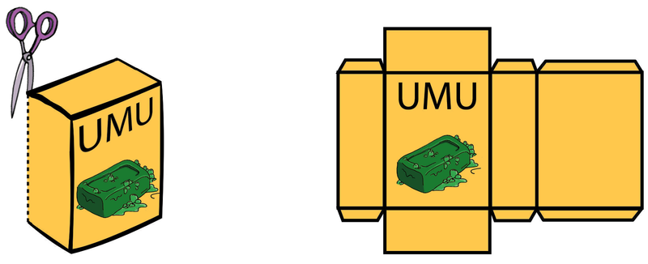<figcaption>Figure 12:  You can unfold a box to make one flat piece of cardboard. This is the development of a box.
</figcaption></figure><p xmlns="http://www.w3.org/1999/xhtml" class="x--Body--above"><b>Trace</b>
    the development onto a piece a paper, using a <b>feint line</b>. Trace it in the middle of the
    blank piece of paper, so that there is space left around the
    traced development.You can use the development many times to
    trace, like the illustration below shows.</p>

    <figure xmlns="http://www.w3.org/1999/xhtml">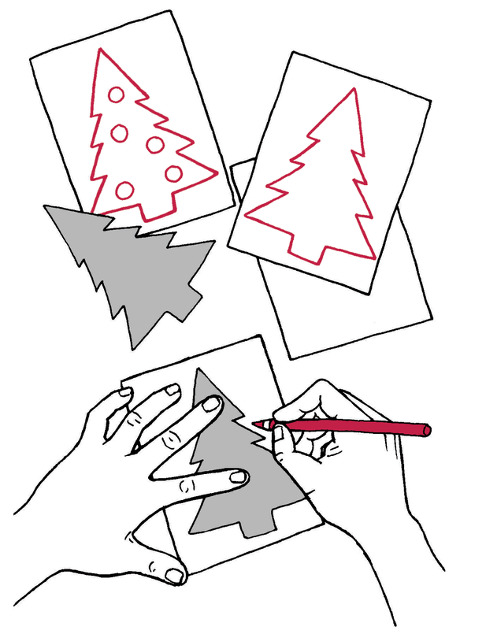<figcaption>Figure 13:  Tracing a shape to make many Christmas cards with the same picture.
</figcaption></figure><p xmlns="http://www.w3.org/1999/xhtml" class="x--Body-Text">When you traced the development of the
    box, your lines were not very neat and straight. That is why
    you made the lines feint. Now use a ruler to draw <b>straight dark lines</b> over the feint lines of
    your development. The dark lines has to show where the paper
    has to be cut. <i>Do not draw dark
    lines for any other reason, otherwise you may later cut off
    something that you don't want to cut off!</i></p>

    <p xmlns="http://www.w3.org/1999/xhtml" class="x--Body-indent">Add <b>dashed
    lines</b> to show where the paper will be folded.</p>

    <p xmlns="http://www.w3.org/1999/xhtml" class="x--Body-indent">Now cut out your development.
    <span class="x--Bodyitalics">Do not cut the dashed lines that
    are for the folds</span>. Fold the development to make it into
    a box.</p>

    <p xmlns="http://www.w3.org/1999/xhtml" class="x--Body-indent">If you accidentally cut off something
    that you should not have cut off, don't worry. Most people make
    mistakes when they try to design and make a box for the first
    time. But learn from your mistakes. Ask yourself what you
    should do next time to make the box right, or better.</p>

    <h3 xmlns="http://www.w3.org/1999/xhtml" class="x--Head-investigation">Homework</h3>
<ol xmlns="http://www.w3.org/1999/xhtml"><li><ol><li>
    <p class="x--Body-investigation-hanging"> Make a new
    paper model of your box. This time make a neater one. Think
    carefully before you start cutting out your development, to
    make sure that you do not cut off something that should not be
    cut off.</p>

    <p class="x--Body-investigation-hanging">Remember that your
    paper model of the box should be made out of just one piece of
    paper.</p>
</li>
<li>
    <p class="x--Body-investigation-hanging-a-"> Bring the
    cardboard box that you cut open and folded flat, as well as the
    paper model you made of this box, to the next lesson.</p>

    <p class="x--Body-investigation-hanging"> Remember to bring
    the paper and cardboard sheets that you gathered over the
    weekend to each lesson next week.</p>
</li>
</ol></li>
</ol><h2 xmlns="http://www.w3.org/1999/xhtml" id="toc-id-8">Make your own box</h2>

    <p xmlns="http://www.w3.org/1999/xhtml" class="x--Body-Text"><b>Learning the
    tricks</b></p>

    <p xmlns="http://www.w3.org/1999/xhtml" class="x--Body-Text">Now that you have successfully made a
    paper box,you will prepare for making a stronger box out
    ofcardboard, using the same design.</p>

    <div xmlns="http://www.w3.org/1999/xhtml" class="frame-57">
      <p class="x--Body-box-no-indent">You will make a cardboard
      box this week, but you first have to learn a few <b>tricks</b>. People who do
      technological work call tricks like these <b>techniques</b>. It makes sense
      that the word technology is similar to the word
      technique!</p>
    </div>

    <p xmlns="http://www.w3.org/1999/xhtml" class="x--Body-indent-1-3">Cardboard is more difficult to
    fold. And thick cardboard can crack when you fold it. You first
    need to learn a <b>trick</b> for
    folding cardboard. You also need to learn how to join two
    pieces of cardboard together with glue. You will have to do it
    in such a way that the glue will dry quickly, and the joint
    will be strong.</p>

    <p xmlns="http://www.w3.org/1999/xhtml" class="x--Body--above"><b>How to glue
    cardboard</b></p>

    <p xmlns="http://www.w3.org/1999/xhtml" class="x--Body-Text">You will join two pieces of cardboard
    with white wood glue. But first do an experiment to find out
    whether it is better to use a lot of glue, or only a little bit
    of glue.</p>

    <p xmlns="http://www.w3.org/1999/xhtml" class="x--Body-indent-1-3 para-style-override-30">Join two
    small pieces of cardboard with a thick layer of glue between
    them. Press the pieces of cardboard together for two minutes,
    then let go. Has the glue dried? Try to gently pull the two
    pieces of cardboard apart. Is the joint strong?</p>

    <figure xmlns="http://www.w3.org/1999/xhtml">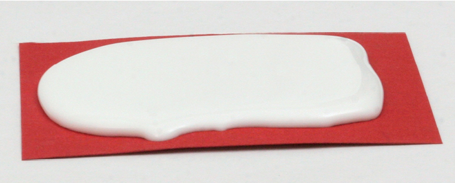<figcaption>Figure 14:  Using a lot of glue
</figcaption></figure><p xmlns="http://www.w3.org/1999/xhtml" class="x--Body-indent-1-3 para-style-override-30">Now try to
    join two other pieces of cardboard. This time use very little
    glue. Put only a drop of glue on the cardboard, and then spread
    it with your finger. Wood glue is not poisonous, and you can
    wash it off with water. The cardboard should look wet and
    shiny. It should not look white like the glue. Press the pieces
    of cardboard together for two minutes, then let go. Has the
    glue dried? Try to gently pull the two pieces of cardboard
    apart. Is the joint strong?</p>

    <figure xmlns="http://www.w3.org/1999/xhtml">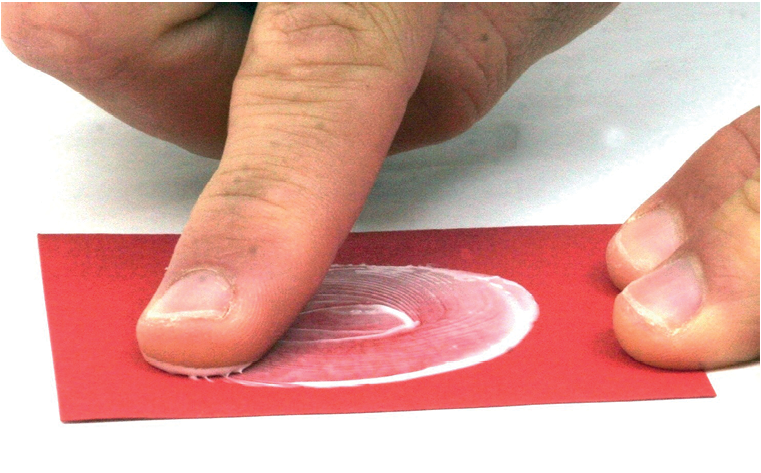<figcaption>Figure 15:  Using very little glue
</figcaption></figure><p xmlns="http://www.w3.org/1999/xhtml" class="x--Body-Text"><b>How to fold
    cardboard</b></p>

    <p xmlns="http://www.w3.org/1999/xhtml" class="x--Body-text-1-3">To fold cardboard to make a
    90° bend, you first need to do the following
    experiment to find out what the best technique is.</p>

    <p xmlns="http://www.w3.org/1999/xhtml" class="x--Body-indent-1-3">Fold a rectangular piece of
    cardboard in half. Use a thick piece of cardboard, like the
    cardboard that a cereal box is made of. The length of the fold
    should be at least 10 cm. Cut three pieces of cardboard that
    you will fold in half in different ways.</p>
    
    <figure xmlns="http://www.w3.org/1999/xhtml">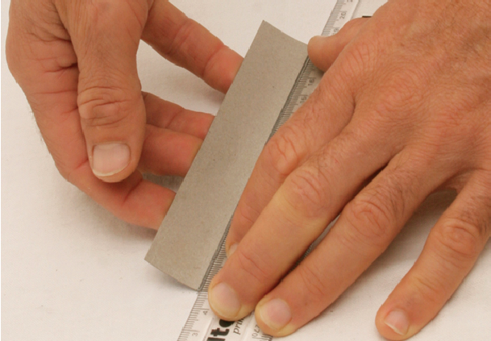<figcaption>Figure 16:  Make a fold without first making a groove. </figcaption></figure><p xmlns="http://www.w3.org/1999/xhtml" class="x--Body-indent-1-3">With the first piece of
    cardboard, draw a pencil line on the inside and then fold along
    that line. Fold it all the way over, using the end of your
    pencil to make the fold sharp. Then bend it back so that it
    forms a 90° bend.</p>
    
    <figure xmlns="http://www.w3.org/1999/xhtml">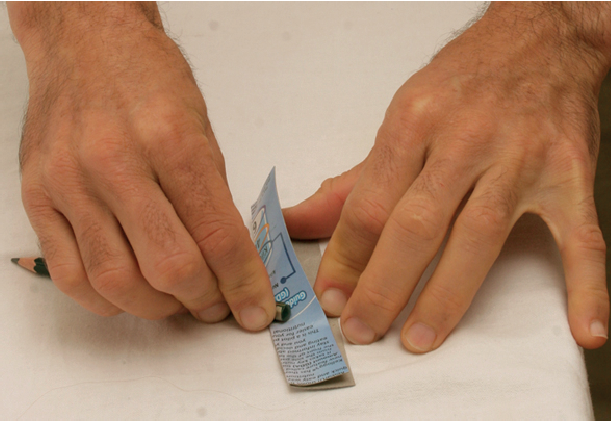<figcaption>Figure 17: Use the end of your pencil to make the fold sharp. </figcaption></figure><p xmlns="http://www.w3.org/1999/xhtml" class="x--Body-indent-1-3">To fold the second piece of
    cardboard, first make a groove on the outside of the cardboard.
    Put your ruler where you want the fold to be, then draw a line
    with a ball point pen. Press hard with the pen, to make a
    groove in the cardboard. Grip the ruler tightly so that it does
    not move while you draw the line. Draw the same line two or
    three times, to make the groove deeper. Fold the cardboard
    along this groove. Fold it all the way over, using the end of
    your pencil to make the fold sharp. Then bend it back so that
    it forms a 90° bend.</p>

    <figure xmlns="http://www.w3.org/1999/xhtml">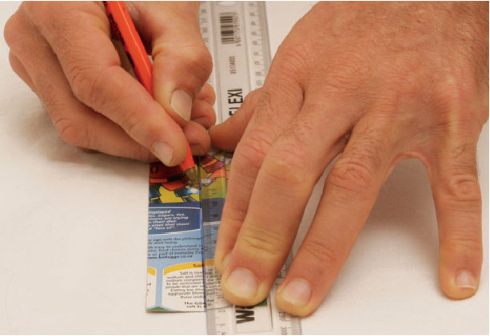<figcaption>Figure 18: Make a fold by first making a groove on the outside. </figcaption></figure><p xmlns="http://www.w3.org/1999/xhtml" class="x--Body-indent-1-3">To fold the third piece of
    cardboard, first make two grooves on the inside of the
    cardboard. Make a groove in the same way as before. The two
    grooves should be parallel, and 1 mm to 2 mm apart. Fold the
    cardboard along these grooves. Fold it all the way over, using
    the end of your pencil to make the fold sharp. Then bend it
    back so that it forms a 90° bend.</p>

    <figure xmlns="http://www.w3.org/1999/xhtml">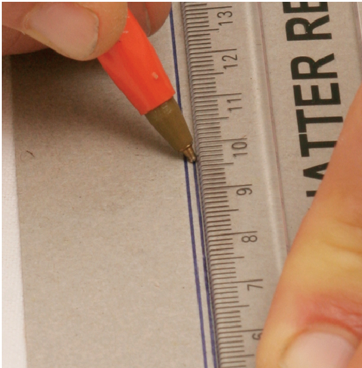<figcaption>Figure 19:  Make a fold by first making two grooves on the inside. </figcaption></figure><p xmlns="http://www.w3.org/1999/xhtml" class="x--Body-indent-1-3">Now look closely at each of the
    three folds. Is it a neat fold? Are there any cracks on the
    outside of the fold? Was it easy or difficult to make the fold?
    Is the fold exactly where you wanted it to be?</p>

    <p xmlns="http://www.w3.org/1999/xhtml" class="x--Body-Text para-style-override-6"><b>Which way of
    folding do you think is the best?</b></p>

    <h2 xmlns="http://www.w3.org/1999/xhtml" id="toc-id-9">Your final box</h2>

    <p xmlns="http://www.w3.org/1999/xhtml" class="x--Body-Text">Use the cardboard box that you folded
    flat to trace the same design onto a flat sheet of cardboard.
    (See Figure 12) Use feint lines. Once again draw
    the glued tab in the position where it was originally attached
    to the single piece of cardboard.</p>

    <p xmlns="http://www.w3.org/1999/xhtml" class="x--Body-indent">Do the same as you did to make your
    paper model of the box. But this time, use the best technique
    to make a fold in the cardboard.</p>

    <p xmlns="http://www.w3.org/1999/xhtml" class="x--Body-indent">When you have cut and folded the
    cardboard, first test whether it will make a box, and that all
    the tabs are there. If it is correct, then glue the one tab to
    the face to which it should be glued. Use the right amount of
    glue.</p>

    <p xmlns="http://www.w3.org/1999/xhtml" class="x--Body-indent">If you have time left in the lesson,
    also do the following activity.</p>

    <h3 xmlns="http://www.w3.org/1999/xhtml" class="x--Head-extension">Something extra you could do to make your boxclose better</h3>

      <p xmlns="http://www.w3.org/1999/xhtml" class="x--Body-box-no-indent">Look closely at the tabs of
      a pill box. You will see small cuts in some of the tabs. What
      do you think is the purpose of those small cuts?</p>

      <p xmlns="http://www.w3.org/1999/xhtml" class="x--Body-box-no-indent">Make a new cardboard box,
      but this time also make those small cuts.</p>

      <figure xmlns="http://www.w3.org/1999/xhtml">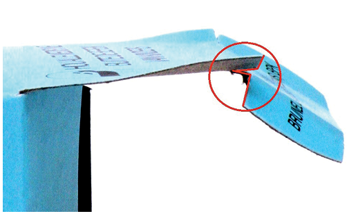<figcaption>Figure 20: The small cuts in a tab that is used to open and close the box </figcaption></figure><h2 xmlns="http://www.w3.org/1999/xhtml" id="toc-id-10">Make a pencil case</h2>

    <p xmlns="http://www.w3.org/1999/xhtml" class="x--Body-Text">Design a new box of a different size.
    The new box will be used as a pencil case. You should be able
    to fit two pencils, two pens, an eraser and a sharpener in it.
    You will design the pencil case by using the same ideas that
    you used to make your previous cardboard box.</p>

    <p xmlns="http://www.w3.org/1999/xhtml" class="x--Body-indent">First make a rough plan of how the
    development for the box will look. Do this on the next page.
    The rough plan should show all the <span class="char-style-override-3">dimensions</span> of the development.
    Dimensions mean the same as measurements. To draw up the rough
    plan as quickly as possible, make the drawing by hand, without
    a ruler.</p>

    <p xmlns="http://www.w3.org/1999/xhtml" class="x--Body-indent">Then draw the plan accurately on a
    piece of cardboard, using your ruler to measure and draw
    straight lines. Remember to use dashed lines to show where the
    paper will be folded. Do not cut along the dashed lines.</p>

    <p xmlns="http://www.w3.org/1999/xhtml" class="x--Body-indent">Go on and make your own cardboard
    pencil case.</p>

    <p xmlns="http://www.w3.org/1999/xhtml" class="x--Body-Text para-style-override-12">Make a rough
    sketch of a development for a pencil case:</p>

    <div xmlns="http://www.w3.org/1999/xhtml" class="note">
      <p><b>Reduce, reuse, recycle
</b></p>
<p>Last week you learnt that it damages the
environment when more and more plastic is made
and thrown away. You can reduce this negative
impact on the environment in different ways.
</p>
<p>Firstly, you can buy less plastic things, which is
called <b>reducing your consumption</b>. Secondly, you
can use some things over and over, so that you
don’t have to buy new things. This is called reusing
things.
</p>
<p>This week you learnt about recycling. What if you
have something, and that something gets broken
or you don’t need it anymore? Then you have to
throw it away. Fortunately, there is a clever way of
throwing things away, by <b>separating the different
types of waste</b>. For example, if you and your family
collect all your plastic waste separately, then
someone can take that plastic to a recycling factory
where new plastic is made from the old plastic.
</p>
    </div>
<figure xmlns="http://www.w3.org/1999/xhtml">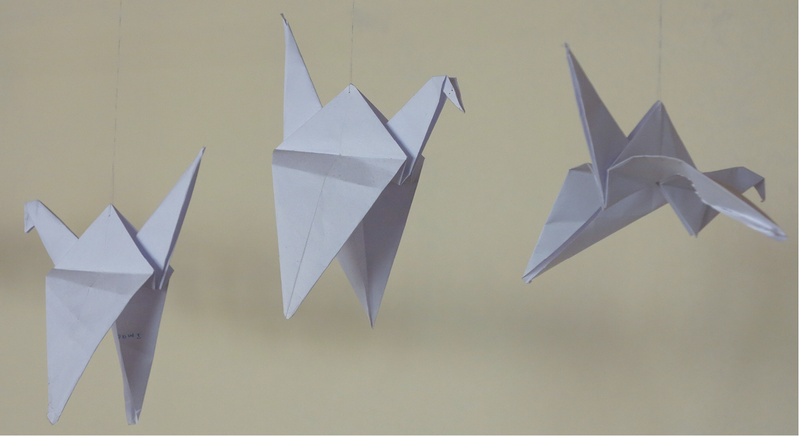<figcaption>Figure 21
</figcaption></figure><h3 xmlns="http://www.w3.org/1999/xhtml" class="x--Head-investigation">Next week</h3>

    <p xmlns="http://www.w3.org/1999/xhtml" class="x--Body-Text">Next week, you will learn where
    electricity comes from. Generating electricity has a negative
    impact on the environment. Burning wood or gas or paraffin for
    heating or cooking, also has a negative impact. You will think
    of ways to reduce this negative impact, by designing a house in
    a clever way.</p>

    
  </div>
</div>